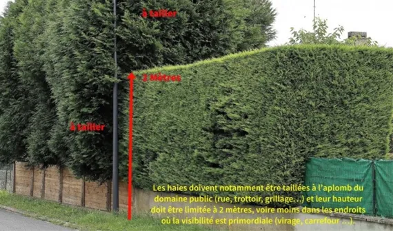
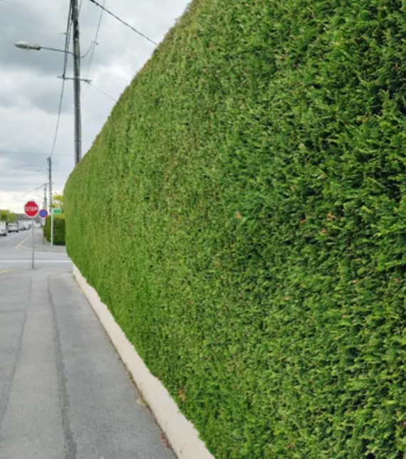

Harmonie végétale avec le Ch’ti Élagueur à Lambersart
Taille de haie et arbres fruitiers à Lambersart
Chez le Ch’ti Élagueur à Lambersart, notre approche de la taille de haie et des arbres fruitiers vise à créer une harmonie végétale. Chaque intervention est méticuleusement planifiée pour équilibrer l’esthétique des haies tout en optimisant la productivité des arbres fruitiers. Nous façonnons chaque coupe pour stimuler la croissance naturelle des haies tout en favorisant la floraison et la fructification des arbres fruitiers. Notre équipe dévouée s’attache à créer des espaces extérieurs où la beauté esthétique rencontre la fonctionnalité productive. À Lambersart, le Ch’ti Élagueur apporte une précision experte à la taille de haie et aux soins des arbres fruitiers. Chaque coupe est exécutée avec une précision chirurgicale, modelant des haies impeccables et encourageant la floraison et la fructification des arbres fruitiers. Notre équipe s’engage à offrir des espaces extérieurs où la précision et la productivité végétale se rencontrent harmonieusement.
Notre savoir-faire
Le Ch’ti Élagueur réalise chaque coupe pour favoriser la floraison, la pollinisation et la récolte
Le Ch’ti Élagueur à Lambersart, déploie une expertise remarquable dans la taille de haie et les soins aux arbres fruitiers. Chaque membre de notre équipe est formé pour manipuler avec précision les haies tout en comprenant les besoins spécifiques des arbres fruitiers. Chaque coupe est stratégiquement réalisée pour favoriser la floraison, la pollinisation et la récolte, tout en assurant une esthétique parfaite des espaces extérieurs. La taille de haie et le soin des arbres fruitiers chez le Ch’ti Élagueur à Lambersart, sont des éléments clés pour créer un jardin réfléchi et prolifique. Chaque intervention est menée avec une vision stratégique, favorisant l’esthétique des haies tout en maximisant la récolte des arbres fruitiers. Notre équipe dédiée œuvre pour des espaces extérieurs à la fois esthétiques et fonctionnels.

Un service intégral de jardinage pour toute Lambersart
La taille de haie et le soin apporté aux arbres fruitiers chez le Ch’ti Élagueur à Lambersart, constituent un service intégral de jardinage. Chaque intervention est effectuée dans le respect des saisons, adaptée aux besoins spécifiques de chaque végétal pour encourager leur santé et leur rendement. Notre équipe dédiée garantit une esthétique impeccable tout en favorisant une récolte abondante et délicieuse des fruits. Chez le Ch’ti Élagueur à Lambersart, notre expertise s’étend à la fois à l’art de la taille de haie et à la maîtrise des arbres fruitiers. Chaque membre de notre équipe est formé pour façonner des haies élégantes et favoriser la floraison abondante des arbres fruitiers. Chaque intervention est une œuvre d’art végétale, créant des espaces extérieurs équilibrés et productifs.
Chaque intervention conçue pour assurer une croissance équilibrée des haies et arbres fruitiers
Chez le Ch’ti Élagueur à Lambersart, nous accordons une importance capitale à la taille experte des haies et des arbres fruitiers. Chaque intervention est conçue pour optimiser la santé des végétaux tout en préservant leur beauté naturelle. Notre équipe professionnelle assure une croissance équilibrée des haies et des arbres fruitiers pour un jardinage durable et des espaces extérieurs resplendissants. La taille de haie et les soins aux arbres fruitiers chez le Ch’ti Élagueur à Lambersart, sont une fusion parfaite entre l’esthétique et la fertilité. Chaque intervention est soigneusement planifiée pour maintenir l’équilibre entre des haies soignées et la croissance fructueuse des arbres fruitiers. Notre équipe s’efforce de créer des espaces extérieurs où l’harmonie entre la verdure et les fruits est tangible.

Des motifs naturels conçus selon vos envies
La taille de haie et des arbres fruitiers chez le Ch’ti Élagueur à Lambersart, visent à maintenir un équilibre parfait. Chaque coupe est exécutée avec une précision méticuleuse pour préserver la structure des haies et des arbres fruitiers, favorisant ainsi une récolte prolifique tout en offrant des espaces extérieurs magnifiquement entretenus et esthétiquement plaisants. Chez le Ch’ti Élagueur à Lambersart, chaque coupe de haie est une sculpture vivante, chaque soin aux arbres fruitiers est une symphonie florale. Nous façonnons avec précision chaque haie pour créer des motifs naturels, tout en encourageant la floraison et la fructification des arbres fruitiers. Notre équipe d’artisans paysagistes métamorphose votre jardin en un tableau vivant et productif.
Un jardin pensé, un jardin productif
Au Ch’ti Élagueur à Lambersart, nous considérons la taille de haie et des arbres fruitiers comme des éléments clés pour créer un jardin prospère. Chaque intervention est effectuée avec une approche holistique, favorisant une croissance saine des haies et des arbres fruitiers pour offrir un espace extérieur à la fois verdoyant et productif. Chaque coupe est exécutée dans le respect de la saisonnalité, garantissant ainsi des espaces extérieurs resplendissants tout au long de l’année. À Lambersart, le Ch’ti Élagueur orchestre une symphonie végétale, harmonisant la taille de haie et la prudence des arbres fruitiers. Chaque intervention est dirigée avec une expertise musicale, sculptant des haies symétriques et favorisant la croissance fructueuse des arbres fruitiers. Notre équipe est composée de paysages extérieurs où la beauté esthétique fusionne avec la productivité naturelle.
Demander un devis gratuit
Nos autres services